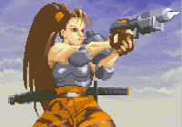
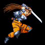
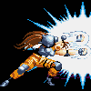
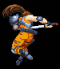
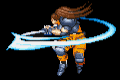
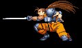

黑澤一家三口的設定集。於1997年大體上完成，遠在『征戰』寫出來三年前。
這邊的東西有些會防礙閱讀『征戰』一篇的樂趣， 如果沒看過『征戰』的話建議先不要閱讀本設定。
2001/05/05 -Zordius-
姓氏黑澤。取這個姓的最大源起，或說會有黑澤姊妹設定的誕生， 皆是因為當時我很迷一個CAPCOM的動作遊戲：ALIEN VS PREDATOR。 當中我最喜歡的一個角色練到一道全破，那就是LINN KUROSAWA （或LYNN KUROSAWA，依電玩版本而有不同），譯：黑澤 琳。
當年能找到有關她的設定很少，那時也沒有圖可以抓。
這邊所列出來的圖是最近從CPS2模擬器上抓下來的，
一邊抓圖時我發現我還是很喜歡她。第一個原因是馬尾，
第二個原因就是她那帥斃了的各個招式。
由模擬器上看到的資料只寫了她精通古武術，隨身帶把武士刀， 那把刀代表了她的靈魂。這麼少的可憐的資料可無法滿足我個人對這角色的喜愛， 所以我特別幫她作了設定：（所以，下面列的是非官方設定。）
Lynn Kurowaka(黑澤琳)：身高159CM，體重44KG，23歲，武神流某代傳人， 現任武神流破壞使，經通武器使用與爆破。隨身攜帶斬鐵武士刀，刀名：魂之刃。 精通招式如下：
1.無明偽殺拳：武神流的『氣劍道』，以雙手將強烈的氣釋出形成『氣刃』， 並於命中時炸裂爆散。
2.斷魂：武神流的『破刀法』，將刀橫置，斬出，破壞敵人武器的專門技巧。
3.龍牙斷空斬：武神流的『空劍道』，發出時全身持劍旋舞，近乎無破綻， 為對多攻擊。
4.武神獄劍斬：武神流的『截斬道』，為攻下段的三段斬殺技。
5.破壞舞：武神流的『封印術』。 為武神流秘傳禁技『禁劍道』的唯一對應術，使出方法不詳。
6.鬼•哭•刃：武神流的『禁劍道』，使出後將精神失去控制。招式內容不明。
會有黑澤一族的產生全都是起因於她還有她的招式。 因為黑澤琳是近未來的人物， 所以我後來把黑澤一族當作黑澤琳的祖先並把設定銜接起來。
黑澤這個姓對我而言是充滿神秘感的， 如果我要設定格鬥家或劍道家我大概第一個想到的就是這個姓。
我忘了是先設定出姊姊還是先設定出妹妹。 當初為了玩MUD 以及對劍術設定的狂熱，就誕生了這兩個人物。 這兩個類型我都很喜歡。剛設定出來時MIDORI是外國人而冰雅是日本人， 後來到寫『征戰』時才又改過來。
妹妹，黑澤ノジベ（MIDORI KUROSAWA）是長黑髮，文靜型的人。身高169， 體重49公斤，19歲。喜好茶道，生於三月5 日。為黑澤正宗第十一代傳人， 並開創黑澤劍的南派『黑澤南氤流』。為其父正室所生。
姊姊，黑澤冰雅（ICESS KUROSAWA）是黑短髮，果斷型的人。身高170，體重50公斤， 20歲。喜好武器，生於十二月4 日。為黑澤正宗第十一代傳人， 並開創黑澤劍的北派『黑澤北茵流』。為其父側室所生。
這兩姊妹的個性不怎麼明確，我當初唯一給她們心理有關的設定只有『姊妹不合』。 至於姊妹間不友愛的原因我當時想不出來，現在也很難說明。 她們的生母不同並不是原因。
她們的父親是在過一兩個月之後才設定出來的。
黑澤剛彥（TAKEHIKO KUROSAWA），黑澤劍第十代傳人。身高175，體重74， 47歲。最愛的人為兩個妻子。正室是夏子，日本人；側室是理莎（RISA），外國人。 身為拔刀術正宗領導卻不意領會號稱拔刀術剋星的劍術，同時妻子皆亡， 之後很多時間都處在矛盾與痛苦中。
這個人的個性與劍術一樣，至中至正。他只相信單純的劍的力量， 而不相信添加別的力量而變強的劍。這�堣@樣有個讓他感到矛盾的點： 他的兩個女兒所創的劍派都不是純劍術流派。
左側是領會了『無意識流亂斬道』時黑澤剛彥的剪影， 右側則是在那之前他的剪影。 領會無敵但是莫明的劍術所帶給他的幾乎是完全的不幸， 基本上這也可以說是我在對自己所追求的東西感到懷疑時的心情寫照。